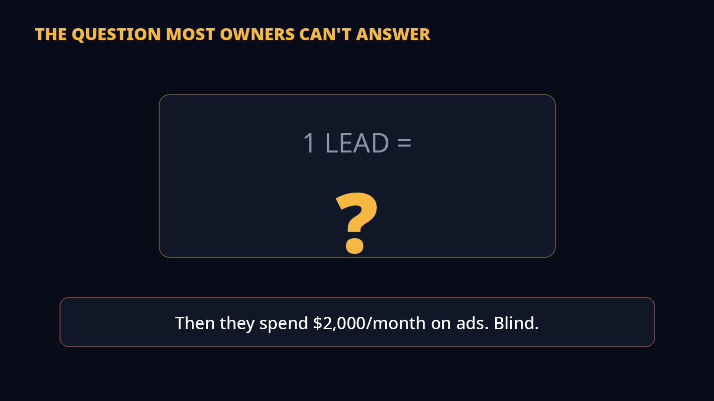
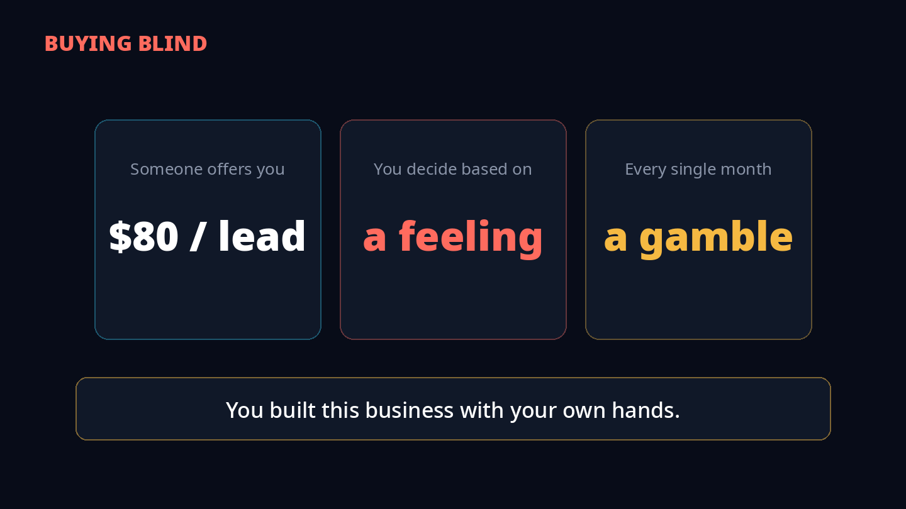
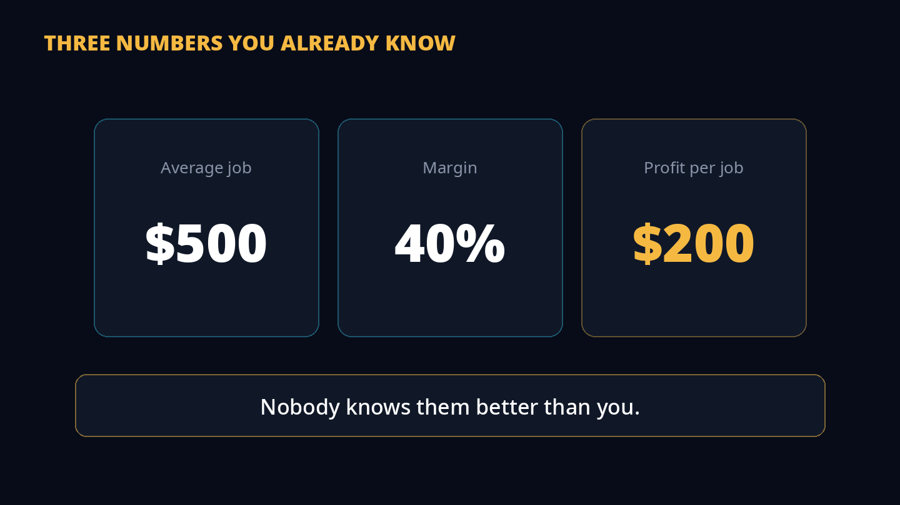
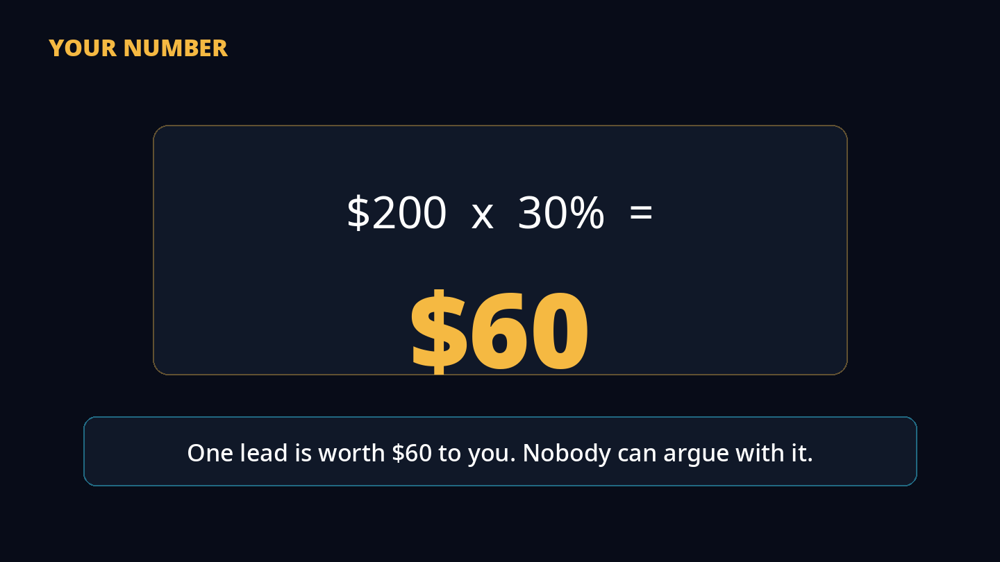
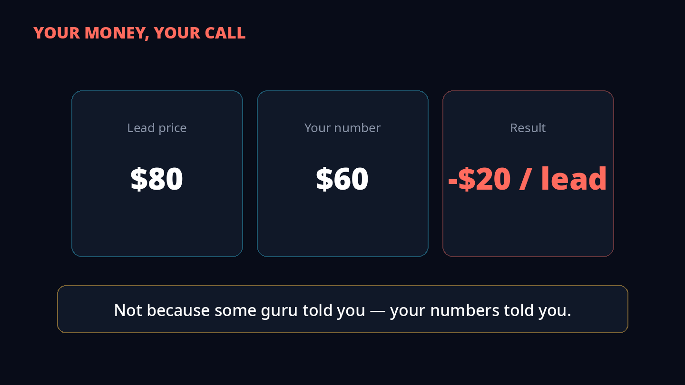
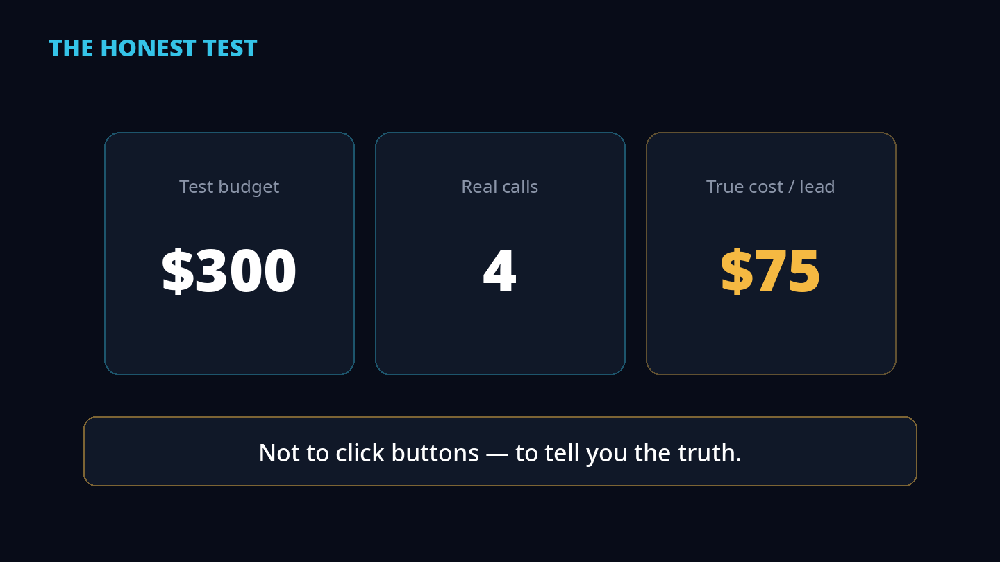
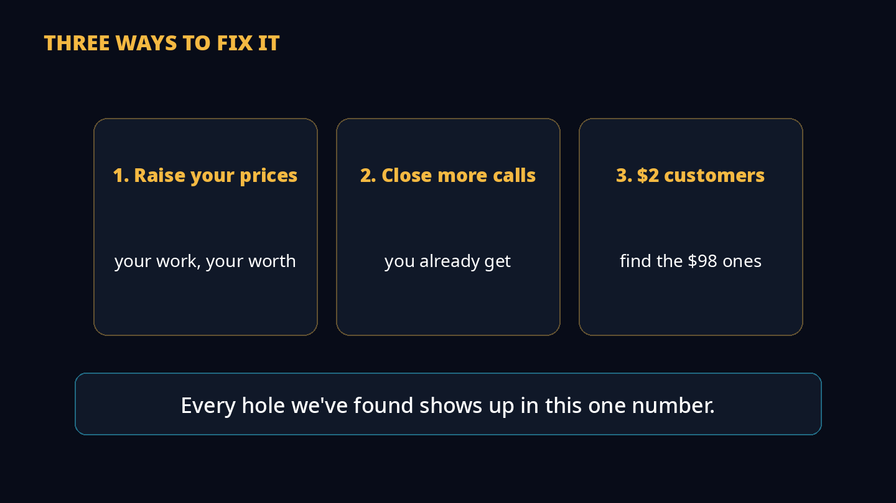
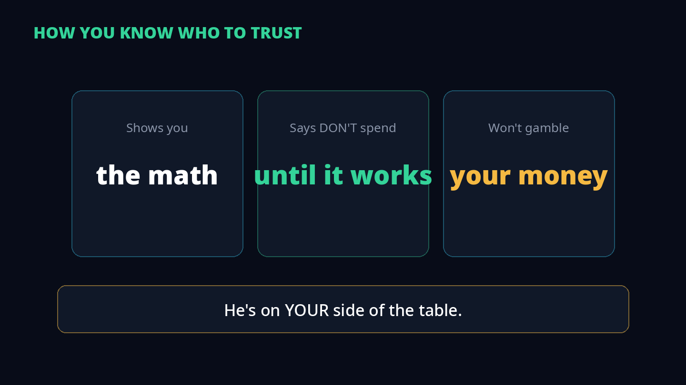
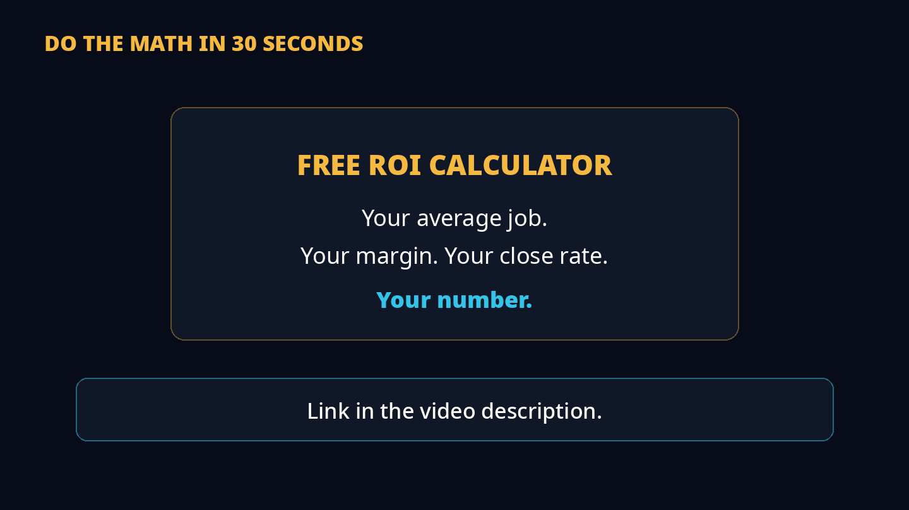

Don't spend one dollar on Google Ads until you know this number. You're the owner. You close the jobs. You know what a job is worth. But ask yourself — what is one LEAD worth to you?
1The question

Most business owners can't tell me what one lead is worth to them. They know their revenue. They know their costs. But ask them, "What's one lead worth to you?" Silence.
And then they spend $2,000 a month on Google Ads. Blind.
2Gambling with your own money

Here's what happens. Someone offers you leads — $80 a lead, let's say. And you have to say yes or no... based on what? A feeling.
You have no number to compare it to. So you're gambling. Every single month. With your own money.
3Three numbers you already know

So let's find your number. Three numbers — and nobody knows them better than you.
First: your average job value. Let's say $500. Second: your margin. From that $500, after materials, labor, fuel — what do you keep? Let's say 40%. That's $200 profit per job. Your work. Your $200.
4Your number

Third: your close rate. Out of 10 calls, how many jobs do YOU close? Be honest. Most owners close 20 to 30%. Let's say 3 out of 10.
Now multiply. $200 profit per job, times 30%. That's $60. One lead is worth $60 to you. That's your number. Nobody can argue with it — it's YOUR math.
5Your money, your call

Now you decide. Leads cost $80. Your number is $60. Every lead LOSES you $20. That's your money walking out the door. So you don't buy.
Not because some guru told you — because YOUR numbers told you. But if your number was $100? Then you buy. Same leads. Same price. Different math, different answer. And it's YOUR answer.
6Why you hire a marketer

So how do you find your real cost per lead? Not alone. You're running a business — you'll read the numbers wrong, or panic when $300 brings two calls. That's why owners hire marketers.
But most will sell you a $2,000 package and hope. The honest one runs a small test first. $300. One week. One service. Let's say it brings 4 calls. That's $75 a lead. Then he tells you the truth: don't scale this. Fix your number first.
7Three ways to fix it

If your number is too small, you fix it. Three ways. One: raise your prices — you decide what your work is worth. Two: close more of the calls you already get. Three: stop chasing $2 customers and find the $98 ones.
That's the last three videos in this series — pricing, follow-up, customer quality. They were all building to this one. Every hole shows up in YOUR number.
8Who's on your side

Now here's how you know who to trust. Any marketer can tell you to spend more. The one who shows you this math — and tells you NOT to spend until it works — he's on YOUR side of the table.
And when your number does beat the cost, and he says "now spend" — you'll trust him. Because he already proved he won't gamble with your money.
9Your homework: the free tool

I built a free tool that does this math for you. Put in your average job, your margin, your close rate — it tells you what a lead is worth to you.
Find the hole.Fix the hole.Then grow.
Part of the series
This video completes a four-part arc — every hole feeds the one number:
The 4 Profit Levers — fix your pricing.
The Follow-Up Machine — close more of the calls you get.
The $2 Customer — stop chasing cheap customers.
This video — the math that ties them together.
A note on the numbers
This is a practitioner framework, not a research paper. The dollar figures ($500 job, 40% margin, $80/lead, $300 test) are worked "let's say" examples from the video — plug in your own numbers. The formula itself (average job × margin × close rate) is the whole point: your numbers, your answer.